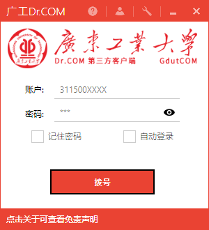

简介
这是一个用C#编写的Dr.com的第三方客户端，没有WIFI共享检测和VPN限制，完全的绿色无公害
使用方法
注意：XP系统无法使用；Windows7/8可能需要安装 DotNet4.5 运行环境
首先关闭Drcom官方客户端
打开下载的GDUT-DrCOM-Dialer，帐号填写你的学号，密码填写上网密码，点击拨号
这时候，如果没有问题的话，应该就可以上网了。
下载
拨号器有两个版本：绿色版和安装版。
绿色版无需安装，但会在第一次运行时下载必要的心跳库用于运行，请放置在某个文件夹下运行。
安装版可以直接安装，下载后即可使用。
Github 源
请访问 Github 项目页面，按照页面指示下载。
镜像站点
若 Github 访问过慢，可以至下列镜像站点下载：
版本历史
参见 https://github.com/GDUT-Drcom/GDUT-Drcom-Dialer/releases
开源声明
Github源码地址：https://github.com/GDUT-Drcom/GDUT-Drcom-Dialer
维护者招募
此项目原维护者大多已经毕业，若您有兴趣继续维护此项目，欢迎至项目页面开issue申请加入维护团队。